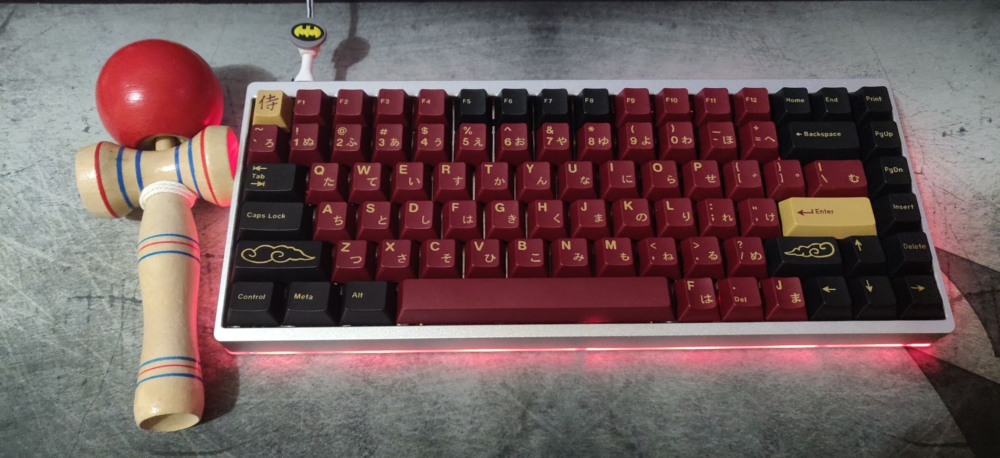
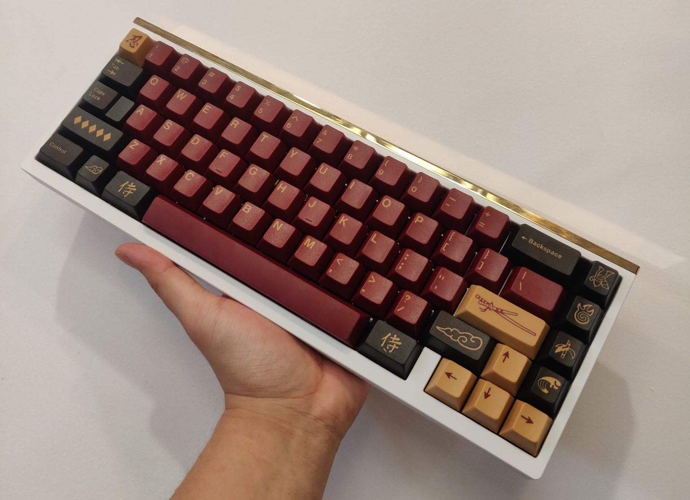

|
Polaris Rose Gold
My favorite daily board
Keeb specs
- PCB: Polaris mill-maxed soldered
- Plate: FR4
- Stablizers: Durock v2 Screw in
- Switches: Lavender Linear filmed and lubed with krytox 205g0
- Keycaps: PBT Cherry MilkShake from NovelKeys LLC
|
KBD75v2 Silver Top - Grey Bottom
This was first custom keyboard build!
Keeb specs
- PCB: YMDK 75 v3 hotswapable
- Plate: Aluminum
- Stablizers: Durock v2 Screw in
- Switches: Cherry MX Brown lubed with krytox 205g0
- Keycaps: GMK Red Sun Samurai
|
 |
|
Think6.5 v2 1u Cute Assassin
My favorite 65% keyboard
Keeb specs
- PCB: Think65 soldered
- Plate: FR4
- Stablizers: C3 Equalz Screw in
- Switches: Durock POM filmed and lubed with krytox 205g0
- Keycaps: JTK Night Sakura
|
KBD67 Lite
A great budget polycarbonate keeb
Keeb specs
- PCB: KBD67 lite bluetooth hotswap
- Plate: Polycarbonate
- Stablizers: Durock v2
- Switches: Alpaca v2 filmed and lubed with krytox 205g0
- Keycaps: CMK Olivia
|
|
|  |
Mode65 E-White
A build for one of my homie
Keeb specs
- PCB: Mode65 hotswap
- Plate: Aluminum
- Stablizers: Durock v2
- Switches: Durock T1 filmed and lubed with krytox 205g0
- Keycaps: GMK Red Sun Samurai
|
Idobao ID80 v2
Another keeb for my homie
Keeb specs
- PCB: Idobao ID80 hotswap
- Plate: built-in with top case
- Stablizers: Durock v2
- Switches: Invyr Holy Panda filmed and lubed with krytox 205g0
- Keycaps: GMK Blue Samurai
|
|